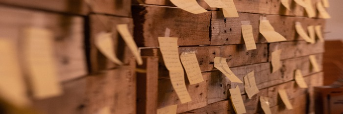

About Me

Bio: Tyler Branum is a recent graduate with a Masters in Global Digital Transformation from Thunderbird School of Global Management.
He has had the opportunity to blend his personal passion of the creative industries with critical problem-solving in data analytics and is excited to embark on the journey to becoming a data scientist.
Through attending Thunderbird, he accomplished a student consulting project where he & his team traveled to Colombia to develop a market-entry strategy for a telephone pole manufacturing company which provided him
with a strong foundation in consulting, stakeholder management, market research & project management.
He is open to work and seeking opportunities in data science, marketing, analytics & consulting positions.
Tyler will be updating this website with future personal projects currently focused within Kaggle to work on ML applications.
Education:
Tyler has recieved his BS degree from Thunderbird School of Global Management in International Trade and will
be graduating with a Masters in Global Management from Thunderbird this Spring 2023 with a specialized focus in Digital Transformation.
Research Interests:
Machine Learning - Data Science - Marketing Analytics - Project Management - Sustainability - Business Strategy
Publications:
City of LA Ecological Landscaping Resource Portal and Plant Selection Tool
Research
Student Consultant: Pretecor's Market Entry Strategy
Upon my team and me arriving in Colombia, we conducted a three phased approach of Research, Analysis, and Implimentation due to our limited time with the client.
Our first week consisted of over 20 informational interviews with stakeholders from C-Suit to Governmental agencies to establish both trust and understanding of the challenge.
Upon digesting the information we collected, we spent the second week evaluating our findings, refined questions and began brainstorming upon opportunities.
Our final week on the ground ended in a mid-point deliverable providing insight and direction to the client ensuring our path was laid out for when we returned to the U.S.
In our remaining three weeks back home, we finalized strategies for: International Trade, Operations, Marketing, Customer's Digital Journey, Client Lists, and Legal Regulations that we foresaw as hurdles and required adaptations.
Los Angeles Sanitation: SDG Internship
From a cohort of 64 focusing on various SDG's, our 8 person sub-cohort was tasked with the goal Life on Land. Each member
responsible for an individual deliverable with frequent cross over of data sharing. My deliverable focused on mapping all 27 ecotopes in the City of L.A. and attributing them
to a search function with the input feature being zip code. The purpose was to provide a credible data base backed by environmental scientists to encourage businesses & home owners to move away from importing
invasive species. My contribution to this project established the foundation of the thousands of rows of database entry, customer journey mapping & the search processing theory for a future cohort to build it into the web.
Student Consultant: Early Warning Services MR & Product Development
My undergraduate capstone project was my first exposure to consulting outside of a classroom case study.
Our four person team was tasked with a staged process of researching the Peer-to-Peer payment industry, data aggregation companies, and data privacy laws within the United States.
The projects primary metric for success was establishing a baseline of pricing models of competitors in the data aggregation industry. Secondary metric for success was researching regulations of GDPR
and categorizing the risk for EWS and competitors of the potential federal level adoption in the U.S. Lastly, but not least, was a creative journey that I experimented with in expanding the
product offerings on their Zelle P2P platform from only 'Pay' and 'Request' features to a 'Group Payment' or 'Split' option for consumers to click. This side project was intended to
keep Zelle competitive amongst players like Venmo and CashApp who had a larger piece of the millenial and zoomer generations. I learned how to use Adobe XD to establish the customer
journey from establishing the payment to splitting various bills within a hypothetical boating trip. The UI of the customer journey can be found HERE.
This 'beta' experimentation eventually made it into a working feature in the Zelle service that can be seen today which I find incredibly rewarding to have been a part of.
Projects

Machine Learning:
• Random Forest Classifier: Kaggle's Titanic Problem with 79% Accuracy. Purpose: Become familiar with Kaggle.
• Stacked Classifier: Kaggle's Spaceship Titanic Problem:
Following an End-to-End Tutorial. Currently working on Feature Engineering & Log Transformation. Purpose: Further familiarity on Kaggle & ML Theories I've studied in class.
Academic Projects:
Data Analytics:
• Big Data at Toyota:
Big data project developing dashboards of product sales & consumer behavior at Toyota to assist in the strategic expansion to an international city. Programs used: Tableau, Excel
• For iUNIK Skincare:
Market research project to gather secondary & primary data to analyze correlations and trends of American skincare consumers preferences on sustainability and packaging styles. Programs used: IBM-SPSS, Qualtrics, Tableau, Excel.
International Trade:
• Mock Signaporean Health Device Manufacturer:
Market entry strategy into the European market targeting the increased aging population with a wearable vital monitor device. Investigated European regulations, corporate structures, distribution capabilities, and political structures.
Sustainability:
• At McCarthy Construction:
Investigative project addressing concerns of greenwashing and providing recommendations to the flow of their construction methods for improvement on Sustainable Development Goals to reduce contradicting claims to be fully green.
Contact
Email: tjbranum30@gmail.com
{kind=link}